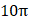

📋 Quy định làm bài
- Thời gian: 45 phút. Còn 10 phút hệ thống nhắc; hết giờ có thêm 5 phút gia hạn rồi tự động nộp.
- Bài làm ở chế độ toàn màn hình. Chuyển tab, mất focus, thoát toàn màn hình đều bị ghi nhận và báo cho giáo viên.
- Không dùng chuột phải, sao chép/dán, phím tắt. Trợ lý AI chỉ mở sau khi nộp bài. Phần tự luận: AI gợi ý điểm, giáo viên duyệt điểm chính thức.
PHẦN I. Câu trắc nghiệm nhiều phương án lựa chọn
Mỗi câu có 4 phương án, chỉ chọn một đáp án đúng (0,25 điểm).
1
Khi một vật dao động điều hòa, chuyển động của vật từ vị trí biên về vị trí cân bằng là chuyển động
2
Vật dao động điều hòa theo trục Ox . Phát biểu nào sau đây đúng?
3
Chu kì dao động điều hòa là:
4
Khoảng thời gian để vật thực hiện được một dao động toàn phần gọi là
5
Đại lượng cho biết số dao động mà vật thực hiện được trong 1 s gọi là
6
Trong dao động điều hòa thì nhóm đại lượng nào sau đây không thay đổi theo thời gian?
7
Độ lệch cực đại so với vị trí cân bằng gọi là
8
Tần số góc có đơn vị là
9
Một vật nhỏ dao động điều hòa thực hiện 50 dao động toàn phần trong 1 s. Tần số dao động của vật là
10
Một vật chuyển động tròn đều với tốc độ góc là π rad/s. Hình chiếu của vật trên một đường kính dao động điều hòa với tần số góc, chu kì và tần số bằng bao nhiêu?
11
Theo định nghĩa, dao động điều hòa là
12
Trong dao động điều hòa, đại lượng nào sau đây không có giá trị âm?
13
Một chất điểm dao động điều hòa với tần số 5 Hz trên quỹ đạo là một đoạn thẳng dài 4 cm. Vận tốc của chất điểm có độ lớn cực đại bằng:
14
Một vật nhỏ dao động điều hòa trên trục Ox theo phương trình $x = A\cos(\omega t + \varphi_0)$. Vận tốc của vật có biểu thức là:
15
Một chất điểm dao động điều hoà với chu kì 1,25 s và biên độ 5 cm. Tốc độ lớn nhất của chất điểm là:
16
Một vật dao động điều hòa có phương trình $x = 2\cos(2\pi t - \pi/6)$ cm. Lấy $\pi^{2} = 10$, gia tốc của vật tại thời điểm t = 0,25 (s) là:
17
Một vật dao động điều hòa có phương trình $x = 5\cos(2\pi t - \pi/6)$ cm. Lấy $\pi^{2} = 10$. Gia tốc của vật khi có li độ x = 3 cm là
18
Vận tốc trong dao động điều hoà có độ lớn cực đại khi
PHẦN II. Câu trắc nghiệm đúng sai
Trong mỗi ý a), b), c), d) chọn Đúng hoặc Sai. Đúng 1 ý: 0,1 · 2 ý: 0,25 · 3 ý: 0,5 · 4 ý: 1,0 điểm.
1
Vật dao động điều hòa có đồ thị li độ phụ thuộc thời gian như hình bên.

a) Biên độ dao động của vật là -10 cm.
b) Tần số dao động của vật là 0,25 Hz.
c) Tại thời điểm t = 2 s vật đi qua li độ x = -10 cm.
d) Tại thời điểm ban đầu, vật ở vị trí biên dương.
2
Hai vật thực hiện dao động điều hoà cùng phương, cùng chu kì dao động có li độ $x_1$ và $x_2$ phụ thuộc thời gian như hình vẽ.

a) Biên độ dao động (1) gấp $\sqrt{3}$ lần biên độ dao động (2).
b) Dao động (1) trong khoảng 0,15 ms vật đi được 3 cm.
c) Pha ban đầu của (2) là $\frac{\pi}{2}$.
d) Hiệu pha ban đầu giữa dao động (2) và (1) bằng $\pi$ rad.
3
Vật dao động điều hòa có đồ thị tọa độ - thời gian như hình bên dưới.

a) Tại thời điểm t = 0 s thì v = 4 cm/s
cm/s
cm/sb) Tại thời điểm t = 1 s thì a = 0 cm/s$^2$.
c) Biên độ dao động của vật là -4 cm.
d) Chu kỳ dao động của vật là 3 s.
4
Một vật thực hiện dao động điều hòa với phương trình $x = 10\cos 2\pi t$ (cm).
a) Biên độ A = 10 cm, pha ban đầu $\varphi_0 = 0$ (rad)
b) Pha dao động khi t = 2,5 s là $5\pi$ (rad).
c) Li độ khi t = 10 s là: -10 (cm)
d) Quãng đường vật đi được sau 1 dao động là 40 (cm)
PHẦN III. Câu trắc nghiệm trả lời ngắn
Điền đáp số (có thể dùng dấu phẩy hoặc dấu chấm thập phân). Mỗi câu 0,25 điểm.
1
Một vật dao động điều hòa theo phương trình $x=5\cos(10\pi t)$ (cm). Tính li độ của vật tại thời điểm t = 0,075 s (kết quả tính theo đơn vị cm, làm tròn đến hai chữ số thập phân).
cm
2
Phương trình dao động của một vật là: $x=5\cos\left(4\pi t+\frac{\pi}{2}\right)$ (cm). Tính li độ x của vật (theo đơn vị cm) tại thời điểm t = 0,25 s.
cm
3
Một vật dao động điều hòa với biên độ A = 12 cm và chu kì T = 1 s. Chọn gốc thời gian lúc vật qua vị trí cân bằng theo chiều dương. Khi t = 1,5 s li độ dao động của vật là bao nhiêu?
cm
4
Một con lắc lò xo dao động điều hòa với biên độ A = 4 cm và tần số f = 1 Hz. Chọn gốc thời gian lúc vật qua vị trí cân bằng theo chiều dương, gốc tọa độ tại vị trí cân bằng của vật. Khi t = 0,25 s gia tốc của vật dao động là bao nhiêu?
cm/s²
5
Một vật dao động điều hòa với biên độ A = 5 cm. Trong 10 giây vật thực hiện được 20 dao động. Biết rằng tại thời điểm ban đầu vật tại vị trí cân bằng theo chiều dương. Khi t = 5 s vận tốc của vật dao động là bao nhiêu?
cm/s
6
Một vật có khối lượng 200 g dao động điều hòa với tần số f = 1 Hz. Tại thời điểm ban đầu vật đi qua vị trí có li độ x = 5 cm, với tốc độ

(cm/s) theo chiều dương. Vận tốc của chất điểm tại thời điểm t = 10 s. cm/s